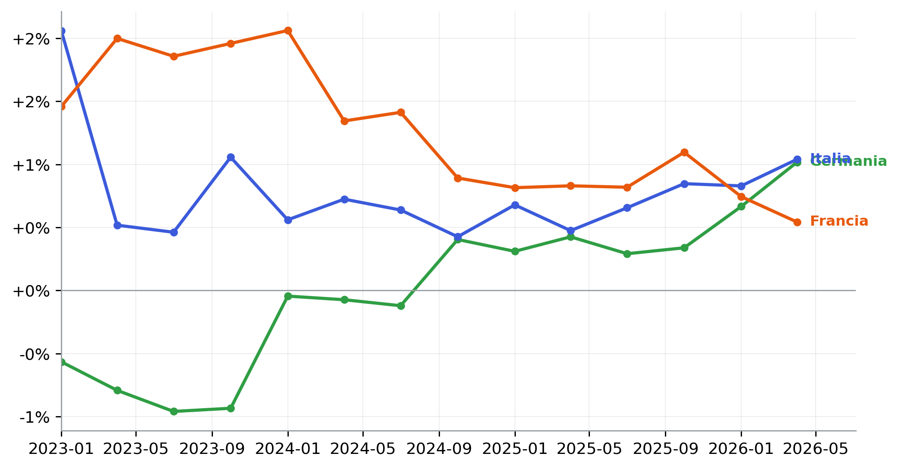
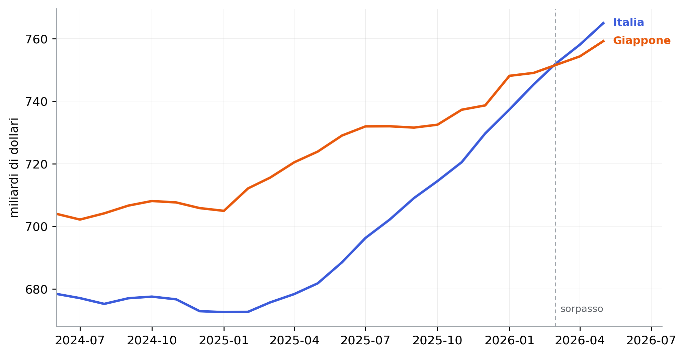
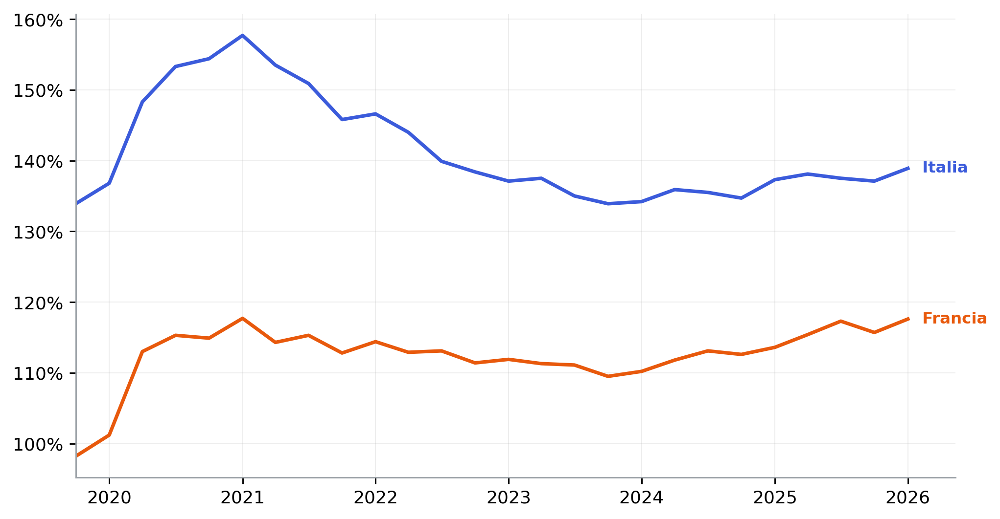
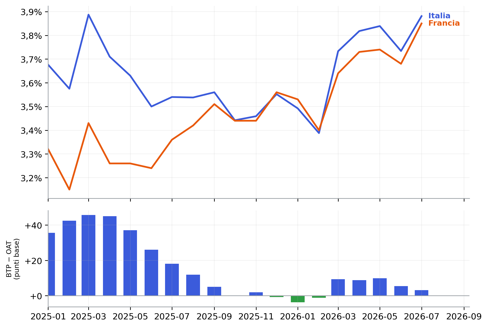

Figura 1: Prodotto interno lordo, variazione sullo stesso trimestre dell’anno precedente (volume, dati corretti per stagionalità e giorni lavorativi). Fonte: Eurostat.
Fonti, definizioni e informazioni integrative a partire da un articolo di stampa del 29 agosto 2026
Paolo Volterra ![]()
Un articolo di commento economico pubblicato il 29 agosto 2026 offre lo spunto per approfondire quattro sviluppi riguardanti Germania, Francia e Italia: la revisione del prodotto interno lordo tedesco, la decelerazione francese, il sorpasso delle esportazioni italiane su quelle giapponesi in dollari e il confronto fra la finanza pubblica italiana e quella francese. Il documento individua le fonti statistiche puntuali (Eurostat, Destatis, Insee, OCSE, BCE), ricostruisce definizioni e grandezze e aggiunge elementi di contesto. La crescita acquisita per il 2026 è pari a +0,88 per cento in Germania, +0,81 in Italia e +0,31 in Francia; l’Italia presenta un avanzo primario di bilancio dal 2024 mentre la Francia registra un disavanzo complessivo superiore al cinque per cento del prodotto. L’esame delle fonti chiarisce inoltre come interpretare la revisione tedesca del 2024, il ruolo dei cambi nel confronto delle esportazioni in dollari e la differenza tra medie mensili e movimenti giornalieri dei rendimenti sovrani.
PIL, conti nazionali, Germania, Francia, Italia, esportazioni, debito pubblico, saldo primario, spread BTP-OAT
Il 29 agosto 2026 un articolo di commento economico [1] ha messo in fila quattro notizie statistiche sulle tre maggiori economie dell’area euro. Le fonti richiamate sono tutte pubbliche: l’ufficio statistico tedesco Destatis, quello francese Insee, l’OCSE, l’Organizzazione mondiale del commercio e la Banca centrale europea. Da qui prende avvio un approfondimento che individua le serie puntuali, rende confrontabili le definizioni e affianca ai dati citati ulteriori informazioni utili a interpretarli.
I quattro temi sono:
Per il prodotto trimestrale la fonte di riferimento è la contabilità nazionale di Eurostat, che pubblica per Germania, Francia e Italia serie costruite con lo stesso metodo e già disponibili fino al secondo trimestre 2026 [2]. Per le revisioni più recenti degli istituti nazionali, non ancora recepite da Eurostat, si utilizzano i rispettivi comunicati [3], [4].

Figura 1: Prodotto interno lordo, variazione sullo stesso trimestre dell’anno precedente (volume, dati corretti per stagionalità e giorni lavorativi). Fonte: Eurostat.
Nel secondo trimestre 2026 il prodotto tedesco cresce dell’+1,0 per cento rispetto allo stesso trimestre del 2025. L’articolo riferisce che questo valore è stato rivisto da +0,9 a +1,0 per cento e che porta la Germania «a raggiungere» l’Italia: il dato italiano nello stesso trimestre è +1,0 per cento, e la Germania effettivamente lo eguaglia. Il comunicato di Destatis conferma la cifra tedesca di +1,0 per cento [3].
La misura più citata nell’articolo è la crescita già acquisita per il 2026, cioè la variazione media annua che si otterrebbe se il prodotto restasse fermo sui livelli dei trimestri già noti. Con 2 trimestri disponibili risulta:
| Paese | Crescita acquisita 2026 | Cumulato dal quarto trimestre 2019 |
|---|---|---|
| Germania | +0,88% | +1,9% |
| Italia | +0,81% | +7,7% |
| Francia | +0,31% | +6,3% |
| Area euro | +0,63% | +7,1% |
I due valori riportati dall’articolo — crescita acquisita tedesca +0,88 per cento, «leggermente superiore» all’italiana +0,81 — coincidono con il calcolo diretto sui dati Eurostat. Coincide anche il confronto di lungo periodo: dalla fine del 2019 il prodotto italiano è aumentato di quasi otto punti, quello tedesco di meno di due.
L’articolo scrive che Destatis ha portato la crescita tedesca del 2024 «da zero a +0,5 per cento». Il comunicato dell’istituto dice l’opposto in termini di livello: la revisione ordinaria ha alzato il dato del 2024 da −0,5 per cento (valore precedentemente pubblicato) a 0,0 per cento, cioè da una contrazione a una stagnazione [3]. Il numero +0,5 è l’ampiezza della revisione, misurata in punti percentuali, non il nuovo tasso di crescita. La banca dati di Eurostat conferma per il 2024 una variazione del prodotto tedesco pari a 0,0 per cento [2].
La distinzione è utile per leggere correttamente la revisione: il +0,5 misura lo scarto rispetto alla stima precedente, mentre il nuovo tasso di crescita del 2024 è pari a zero. Il quadro più ampio resta quello di una Germania che, dopo sei anni di ristagno, mostra segnali di miglioramento nel 2026.
Per il secondo trimestre 2026 la seconda stima dei conti nazionali francesi ha rivisto la crescita congiunturale da +0,2 a 0,0 per cento, e quella del primo trimestre da −0,1 a −0,2 per cento [4], [5]. L’articolo riporta entrambe le revisioni con i valori corretti.
| Trimestre | Prima stima | Seconda stima |
|---|---|---|
| 1° trim. 2026 | −0,1% | −0,2% |
| 2° trim. 2026 | +0,2% | 0,0% |
Tabella 1
La crescita già acquisita per il 2026 in Francia è +0,31 per cento, valore che l’articolo indica in +0,31 e che Insee sintetizza come «acquis de +0,3 per cento» [4]. È circa un terzo della crescita acquisita tedesca e italiana.
Sul potere d’acquisto delle famiglie l’articolo indica un calo dello 0,1 per cento nel primo trimestre 2026 e dello 0,5 nel secondo. Il reddito disponibile reale per abitante rilevato da Eurostat segna nel primo trimestre 2026 una variazione del -0,1 per cento [6]; per il secondo trimestre Insee registra un arretramento dello 0,6 per cento per unità di consumo [4]. Direzione e ordine di grandezza corrispondono.
La revisione al ribasso del secondo trimestre, secondo Insee, dipende da una produzione agricola più debole del previsto e da prezzi dei servizi di trasporto più dinamici delle attese, non soltanto dagli effetti del caldo estivo che alcuni commentatori francesi avevano indicato.

Figura 2: Esportazioni di merci in dollari statunitensi, somma mobile su dodici mesi. Fonte: OCSE, statistiche del commercio internazionale di merci.
Misurate in dollari e su una somma mobile di dodici mesi, le esportazioni italiane di merci hanno superato quelle giapponesi. Nei dati OCSE il sorpasso avviene a marzo 2026 e prosegue nei mesi successivi, per 3 mesi consecutivi nell’ultimo tratto disponibile [7]. All’ultimo dato le esportazioni italiane valgono 765 miliardi di dollari contro 759 miliardi del Giappone. Le cifre citate dall’articolo, riferite a un mese più avanti e alla rilevazione dell’Organizzazione mondiale del commercio — 767 contro 761,6 miliardi — sono coerenti con questa dinamica.
Il confronto va però inquadrato. Il sorpasso è un fenomeno denominato in dollari e determinato in misura prevalente dal movimento dei cambi. Dalla fine del 2024 l’euro si è apprezzato di circa il +11 per cento sul dollaro, mentre lo yen si è deprezzato di circa il 3 per cento [8]. Ricostruendo i due flussi nelle rispettive valute nazionali, l’export italiano è cresciuto di circa il sei per cento, quello giapponese di più del dieci: in yen il Giappone ha aumentato le proprie vendite all’estero più di quanto l’Italia abbia fatto in euro. Il primato in dollari è reale, ma è una classifica di valore corrente, non una misura di competitività in volume.
Va inoltre precisato che il rapporto trimestrale dell’OCSE sui paesi del G20, uscito il 28 agosto 2026, non afferma il sorpasso: riporta soltanto la variazione congiunturale delle esportazioni italiane nel secondo trimestre, pari a +1,8 per cento, osservando che il commercio giapponese ha rallentato [9]. La conclusione sul primato è una deduzione dell’autore dai dati sottostanti, non un risultato pubblicato dall’OCSE.

Figura 3: Debito delle amministrazioni pubbliche in percentuale del prodotto interno lordo, dati trimestrali. Fonte: Eurostat.
I quattro valori dell’articolo trovano riscontro esatto. Il debito italiano in percentuale del prodotto passa da 154 per cento nel 2020 a 139 per cento all’ultimo dato trimestrale disponibile, il primo trimestre 2026; quello francese sale da 115 a 118 per cento [10].
Sul saldo di bilancio, l’indebitamento netto francese resta sopra il cinque per cento del prodotto (-5,1 per cento nel 2025, -5,8 nel 2024), mentre l’Italia, sommando all’indebitamento netto la spesa per interessi, presenta un avanzo primario pari a +0,8 per cento nel 2025 e a +0,5 nel 2024 [10]. Il contrasto tracciato dall’articolo regge.
Va però osservato che la discesa del debito italiano si è concentrata nel triennio 2021–2023, quando l’inflazione ha gonfiato il prodotto nominale: dal 2023 il rapporto è tornato a salire di circa cinque punti. Lo stesso vale, in senso opposto, per la Francia, che era scesa sotto il 110 per cento nel 2023 prima di risalire. La frase secondo cui il debito italiano «è precipitato dal 154 al 139 per cento» è corretta sul saldo di periodo ma non descrive un movimento ancora in corso.

Figura 4: Rendimento dei titoli di Stato benchmark a dieci anni e differenziale Italia-Francia, medie mensili. Fonte: Eurostat, statistica BCE sui tassi di Maastricht.
Il differenziale fra il rendimento del titolo italiano e quello francese si è ridotto da circa 37 punti base a metà 2025 a pochi punti un anno dopo. Sulle medie mensili, però, il rendimento italiano è stato inferiore a quello francese soltanto tra dicembre 2025 e febbraio 2026; da marzo a luglio 2026 il titolo italiano è tornato stabilmente sopra quello francese, di +3 punti base all’ultimo dato disponibile [11].
L’affermazione secondo cui i rendimenti italiani si sarebbero mossi «per la maggior parte dell’estate al di sotto» di quelli francesi non trova quindi conferma nelle medie mensili fino a luglio 2026. È possibile che singole sedute di agosto, in presenza di tensioni politiche in Francia, abbiano invertito il segno del differenziale; ma si tratterebbe di un fenomeno giornaliero non ancora nei dati mensili. L’affermazione, inoltre, è ripresa dall’articolo da un’analisi giornalistica [12] e riferisce una lettura di operatori di mercato, non un dato della Banca centrale.
| Affermazione | Esito | Riscontro |
|---|---|---|
| Germania — prodotto 2° trim. 2026, var. tendenziale +1,0% | Confermato | Eurostat +1,0%; Destatis +1,0%. Eguaglia l’Italia. |
| Germania — crescita acquisita 2026 +0,88%, sopra l’Italia +0,81% | Confermato | Coincide con il calcolo diretto sui dati Eurostat. |
| Germania — prodotto cumulato dal 2019: Italia +7,7%, Germania +1,9% | Confermato | Eurostat: +7,7% e +1,9%. |
| Germania — crescita 2024 rivista «da zero a +0,5%» | Errato | Destatis ha rivisto il 2024 da −0,5% a 0,0%. Il +0,5 è l’ampiezza della revisione, non il livello. |
| Francia — revisioni 1° e 2° trim. 2026; crescita acquisita +0,31% | Confermato | Insee: prima/seconda stima come indicato; «acquis +0,3%». |
| Francia — potere d’acquisto famiglie −0,1% e −0,5% | Confermato | 1° trim. −0,1% (Eurostat); 2° trim. −0,6% per unità di consumo (Insee). |
| Italia — esportazioni 12 mesi oltre il Giappone in dollari | Confermato | OCSE: sorpasso a marzo 2026, mesi successivi sopra. Livelli coerenti con l’articolo. |
| Italia — «successo senza precedenti» / «conferma OCSE» | Da inquadrare | Sorpasso determinato in prevalenza dal cambio (euro +10%, yen −4% sul dollaro). Il rapporto G20 non afferma il sorpasso. |
| Debito/PIL: Italia 154→139%, Francia 114→117% | Confermato | Eurostat: Italia 154→139%, Francia 115→118% all’ultimo trimestre. |
| Italia in avanzo primario; Francia disavanzo oltre il 5% | Confermato | Italia primario +0,8% (2025); Francia indebitamento netto −5,1% (2025). |
| Rendimenti italiani sotto quelli francesi «per gran parte dell’estate» | Non confermato | Medie mensili BCE: titolo italiano sopra il francese da marzo a luglio 2026; sotto solo tra dicembre e febbraio. |
Tabella 2
Nel complesso l’articolo descrive correttamente il quadro di fondo: la Germania esce dal ristagno, l’Italia mantiene la crescita e consolida i conti pubblici, la Francia rallenta e resta in disavanzo elevato. Su crescita e finanza pubblica i numeri sono precisi, e diversi valori — la crescita acquisita, il cumulato dal periodo pre-pandemico, i livelli di debito — coincidono con il calcolo diretto sulle fonti ufficiali.
Restano tre punti da correggere o precisare: la crescita tedesca del 2024, che è stata pari a zero e non a +0,5 per cento; il primato delle esportazioni italiane, reale ma denominato in dollari e sostenuto soprattutto dai cambi; e l’affermazione sui rendimenti dei titoli di Stato, che non trova riscontro nelle medie mensili e proviene comunque da una lettura di operatori di mercato riferita da un altro giornale.
Nota metodologica
Questo documento nasce dall’interazione di tre componenti. L’autore definisce le domande, esercita il giudizio critico e assume la responsabilità scientifica ed editoriale del risultato. Strumenti di intelligenza artificiale generativa sono impiegati a supporto della ricerca bibliografica, della lettura, della sintesi, della riorganizzazione argomentativa e della revisione del testo. Un’infrastruttura open source sviluppata dall’autore automatizza il reperimento, l’armonizzazione e il controllo dei dati dalle fonti statistiche ufficiali, e mantiene l’elaborazione documentata e riproducibile.
Le fonti sono pubblicamente accessibili e citate con la loro denominazione ufficiale; l’analisi è pertanto integralmente auditabile e replicabile da terzi a partire da esse. Le tabelle e i grafici sono elaborazioni dell’autore: calcoli, aggregazioni, trasformazioni e scelte di rappresentazione sono attribuibili all’autore e non agli enti produttori dei dati.
La responsabilità per le fonti utilizzate, le analisi condotte, le elaborazioni effettuate, le interpretazioni proposte e le conclusioni formulate resta interamente in capo all’autore. L’intelligenza artificiale è stata impiegata come ambiente di supporto cognitivo ed editoriale, non come fonte primaria, autore autonomo o sostituto del giudizio critico.
DEXUSEU, DEXJPUS». FRED, Federal Reserve Economic Data, 2026. Disponibile su: https://fred.stlouisfed.org/